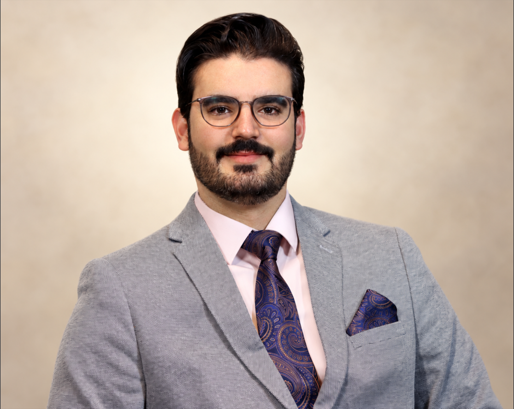
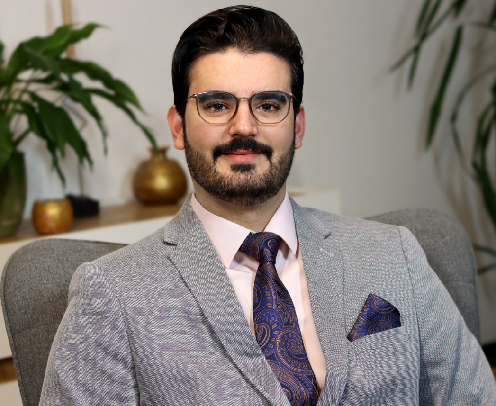

خوش آمدید
درود، من آریا بهرامی هستم
هدف من از راهاندازی نان حیات این است که یافتههایم از کتابمقدس و مسیر شاگردی مسیح را ساده، صادقانه و کاربردی با فارسیزبانان به اشتراک بگذارم.
داستان و شهادت من
هدف من از راهاندازی نان حیات این است که یافتههایم از کتابمقدس و مسیر شاگردی مسیح را ساده، صادقانه و کاربردی با فارسیزبانان به اشتراک بگذارم.
داستان و شهادت من
عیسی کیست، پیام انجیل چیست و چگونه میتوان رابطهای تازه با خدا آغاز کرد؟
شناخت عیسی مسیح۱۰ قدم نخست برای آغاز و رشد در ایمان؛ قدمهایی ساده و استوار برای شناخت بیشتر خدا و زندگی با مسیح. در این مسیر تنها نیستید؛ من در کنار شما هستم تا این قدمها را با هم برداریم.
راهنمای نوایمانانمطالعهٔ عمیق کلام، دعا، شاگردی، خدمت و زندگیکردن ایمان در رابطههای روزمره.
مسیر رشد روحانیکلامی برای نگرانی، خستگی و تنهایی؛ همراه با امکان ارسال محرمانهٔ درخواست دعا.
امید و دعاجایی برای تأمل در کتابمقدس، شناخت عمیقتر مسیح و برداشتن قدمهایی ساده اما واقعی در مسیر ایمان.
نسخهٔ فارسی «هزارۀ نو» را از پیدایش تا مکاشفه، بهصورت فصلبهفصل در یوورژن بخوانید. در همان صفحه میتوانید ترجمههای دیگر را نیز انتخاب و مقایسه کنید.
متن کتابمقدس در وبسایت رسمی YouVersion نمایش داده میشود.
من آریا هستم؛ رهبر پرستش، شبان کلیسا و دانشجوی الهیات. اینجا مینویسم تا یافتههایم از کتابمقدس را ساده، صادقانه و کاربردی با فارسیزبانان به اشتراک بگذارم و با هم در شناخت عیسی مسیح رشد کنیم.
از کودکی و نوجوانی قاری قرآن و مداح بودم؛ اما در ۲۵سالگی، جستوجوی روحانی من به نقطهای رسید که زندگیام را برای همیشه تغییر داد و به عیسی مسیح ایمان آوردم. ادامهٔ این مسیر و داستان ملاقاتم با مسیح را در این ویدئو ببینید.
تماشای شهادت در یوتیوب ←اگر دربارهٔ عیسی مسیح، کتابمقدس یا زندگی ایمانی پرسشی دارید، یا میخواهید برای موضوعی دعا شود، با خیال راحت آن را بنویسید. تلاش میکنم شخصاً از طریق ایمیل پاسخ بدهم و برای درخواست شما دعا کنم.